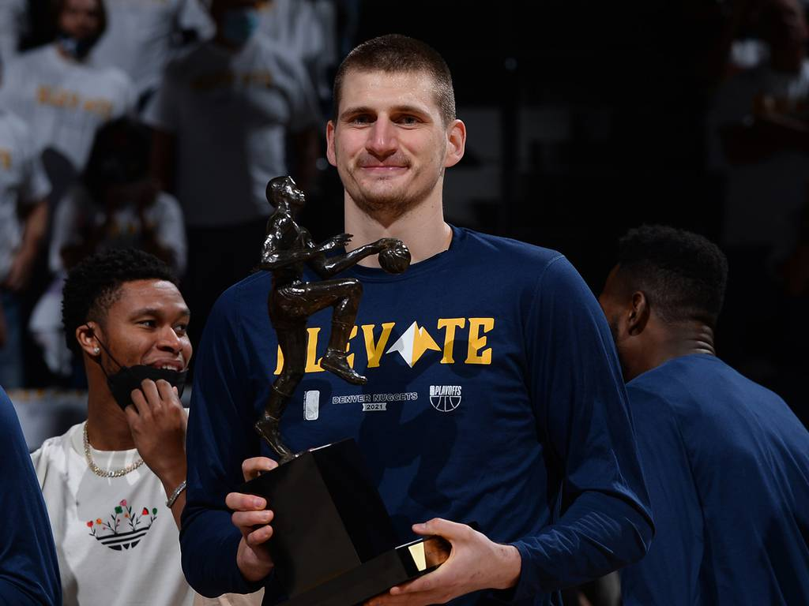

Jokic
El jugador Serbio recibe el maximo galardon individual por segundo año consecutivo, y se une a un selecto grupo de jugadores en conseguir este logro.Jugadores que ganaron dos MVP consecutivos:
Bill Russell (3 seguidos),
Wilt Chamberlain (3 seguidos),
Kareem Abdul-Jabbar (2 veces),
Moses Malone,
Larry Bird (3 seguidos),
Magic Johnson,
Michael Jordan,
Tim Duncan,
Steve Nash,
LeBron James (2 veces),
Steph Curry,
Giannis y
NIKOLA JOKIC